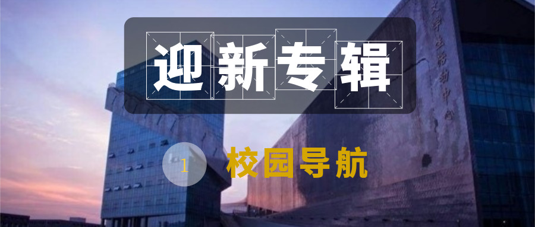
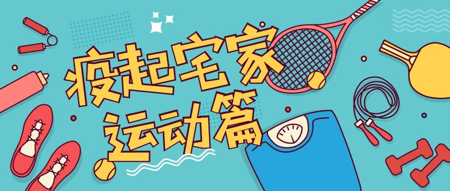
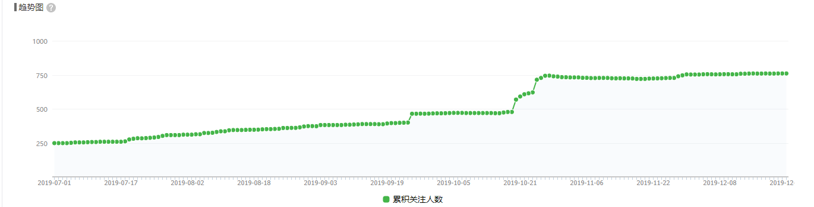
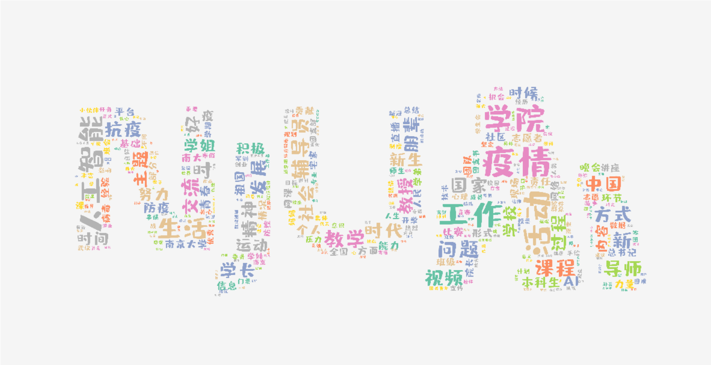

layout: true class: animated, fadeIn, faster, typo, typo-selection --- class: center, middle .north.height-5.center[ # $\large{新媒体团队工作汇报}$ <hr> ] <br> ##### $新媒体团队\,孔锐$ <br> <small>$2020.07.08$</small> --- ## $公众平台概况$ .ri-wechat-fill.icon-inline.nord14[] <hr> .float-right.width-24[ ] #### $微信公众号: \mathsf{NJUAI}学生会$ + 平台关注人数共763人 + 发布文章数量<mark>共计112篇，累计阅读次数65534</mark> ✌️<br> - <small>(📝 其中2019年迎新晚会系列推文以及迎新系列阅读数量较多)</small> + 新媒体团队目前共有12名成员，其中18级本科生4人，19级本科生8人 <br> <small>注：以上数据统计截止于2020年7月8日</small> --- ## $工作计划回顾(秋季)$<hr> ✔ <mark>迎新专题</mark>：校园生活总结、校园导航、常用校内网站盘点、宿舍改造指南、课本清单、军训小贴士等等； <small>(可以沿用)</small> ✔ 招新：新媒体计划招增美编至3人，安排轮班制。<small>设立专栏策划负责人1-2人兼职采编，</small>共计招人6人左右； ❓ 文案模板：为组织的常见活动设立可套用的模板，如团建模板、竞选模板等； ❌ 专栏开辟：开设一到两个.nord11[具有学科特色和校园气息]的专栏（😭欢迎大家踊跃提供创意）； ✔ 新媒体部门技能培训，学习关于美编和文案相关技巧，包括但不局限于编辑器的使用、色彩学基础、新闻稿基础； ✔ 关于迎新晚会和文创：全力配合文创的宣传和迎新晚会预热🔥 --- ## $工作计划回顾(春季😷)$<hr> 📋 专栏尝试：三到四期软件对比推荐 <small>(遗留问题)</small> ✔ 内训方面：在前期内训的理论基础上组织一到两次实践类型的内训 ❌ 人员分配：多余的文编协助参与团日活动文案的编写 ✔ 继续配合下学期可能开展的大型活动宣传 ❌ 形象提升：开学前把封底换掉，下学期设计一批统一风格的封面 .center[ ] --- ## $工作总结$<hr> ##### $部门建设情况:$ 🥳 <mark>部门内部破冰活动✖️1</mark>，<small>分配了部员职责和本学期大致工作规划</small>。<br> 💡 <mark>部门内训✖️2</mark>，<small>完成了关于美编所需工具和技巧以及文编的基本职责和技能的讨论</small>。 <br> .float-right.width-45[  ] ##### $📎工作简述:$ + <mark>开学季特别推文</mark> + <mark>迎新晚会系列推送</mark> + <mark>团日活动系列报道</mark> + <mark>"疫"起宅家系列</mark> .float-right.width-46[  ] + <mark>女生节活动报道</mark> + 运动会、社会实践、企业讲座 ...... --- ## $工作总结$<hr> ##### $📈数据统计:$ .center[ ]<small>关注人数上涨到了一年的3倍之多。整体上基本达到了学期规划任务当中的初步设想。</small> ##### ❗.oc-red-8[$\textbf{主要不足}$]： + .oc-red-8[图文转化率较低]，根源在于内容属性与受众存在偏差；另一方面.oc-red-8[内容缺少相应的产生环境]：产出与受众关心话题的联系弱。 + .oc-red-8[相较文编，美编的工作量大很多]，均衡工作量方面的工作不够细致。 + 相关推送.oc-red-8[在用户的留存上表现不佳，在自创内容的数量上有所不足。] --- ## $后期工作交接$<hr> <br> + 形成书面形式的分环节标准工作流程； .float-right.height-12.width-55.oc-bg-blue-0[ .mermaid[ <pre> graph LR; 文编-->美编-->责编-->最终发送 </pre> ] ] + 推广基于 markdown 及富文本语法的高效美编流程； + 完善部门内部的文案模版以及幻灯片模版工作； + 待补充 --- class: center, middle # $\large{感谢聆听!}$ .center[  ]